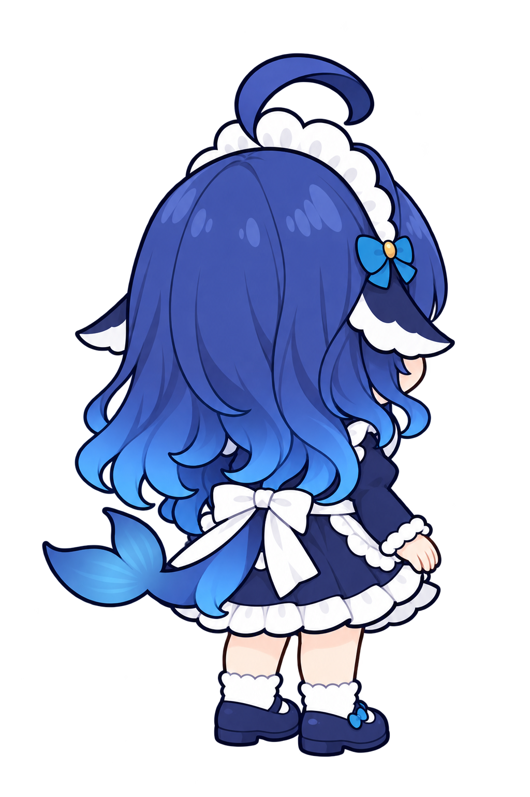

四个方向来自同一张完整画板，按原图统一缩放。查看头部体积、脸型与发束，再看尾根、腰结及角色自身右侧的头饰。
这是母版候选，尚未锁定，也没有替换产品素材。图集拆层、绑定及动作将从接受的母版继续。
辅助线与尾根框是复核标记，不是已测得的骨骼或关节。原参考在下方完整保留，三张参考按各自画布等比例展示。
资源与来源说明 · 现有拆件的原位静态拼合

图片文件保持生成原字节。整图显示与 CSS 放大不改写像素，不对每个方向分别拉伸。候选检查与用户验收分别记录。